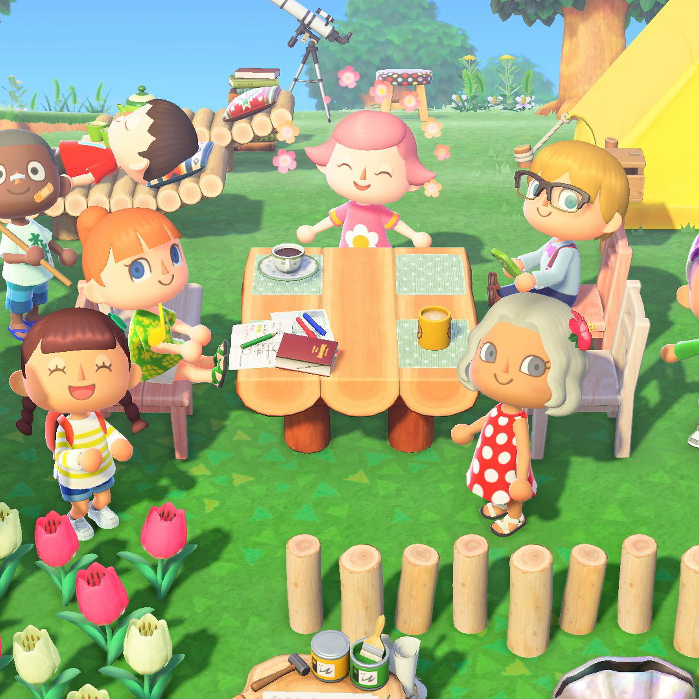

More than 3,600 people with the coronavirus have now died in the United States, according to a New York Times database, a figure that has more than tripled since Thursday morning and that now exceeds the number of people known to have died from the virus in mainland China, where the pandemic started in December.
On a happy note:
That sort of unlikely exchange happens all the time in Animal Crossing: New Horizons, a cheerful and funny video game for the Nintendo Switch that has become a social-media sensation in the era of social distancing. The premise is simple: You're tasked with transforming a small, cartoony island into a bustling village. There is no kidnapped princess or planet on the brink of war, but you get to go outside, which is even better.